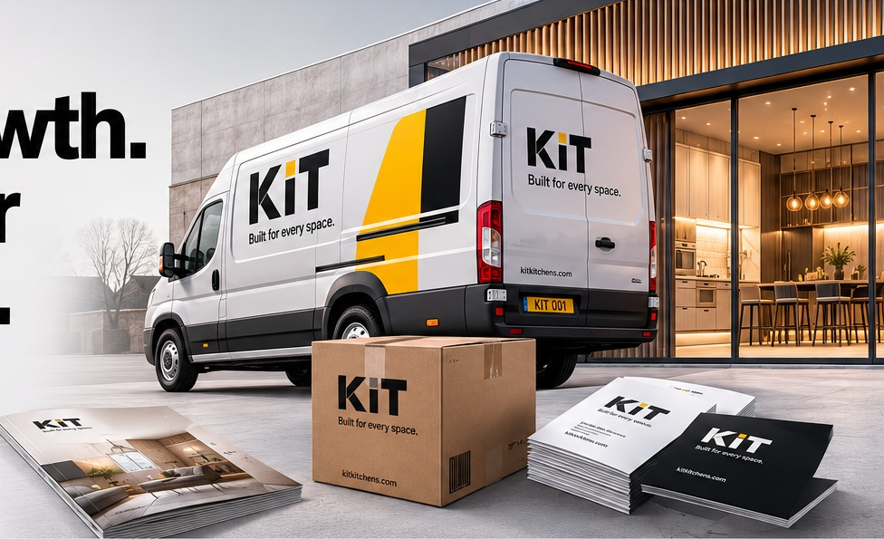
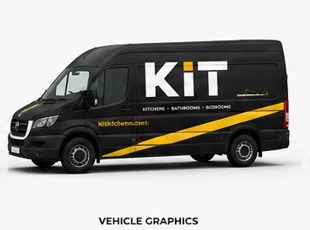
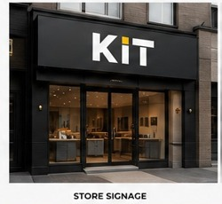
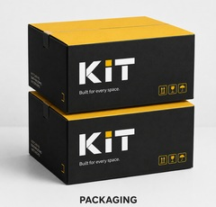
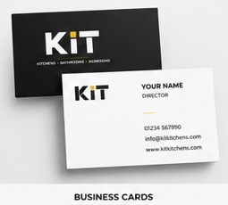
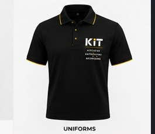

KIT Kitchens
kitkitchens.com
kitkitchens.co.uk
Expressions of interest close Friday, 28 August 2026
Submit an expression of interest →One master brand. Five specialist markets.
KIT is a scalable retail and ecommerce platform for the home-improvement sector—ready to launch independently or extend an established business into new categories and customer markets.

kitkitchens.com
kitkitchens.co.uk
kitbedrooms.com
kitbedrooms.co.uk
kitbathrooms.com
kitbathrooms.co.uk
kitinteriors.com
kitinteriors.co.uk
kitstorage.com
kitstorage.co.uk
Master brand
with broad market appeal
Specialist brands
across core home categories
Premium domains
.com and .co.uk secured
Commercial potential
across multiple models
Expressions of interest close on this date.
The platform
KIT provides an acquisition-ready foundation for a new ecommerce venture, an established retailer entering new markets, or a group seeking a disciplined multi-category identity.
The master brand creates recognition and trust. Each specialist category then speaks directly to its own audience while benefiting from the strength of the wider system.
The brand system
The approved KIT mark remains consistent across the platform. Category descriptors provide relevance without fragmenting the master brand.
Simple. Memorable. Built for expansion.
Kitchen furniture, components and complete room propositions.
Fitted and freestanding bedroom furniture and storage.
Bathroom furniture, sanitaryware and coordinated ranges.
Wider interior products, finishes and complete-space solutions.
Utility, organisation and storage systems across the home.
Commercial applications
The brand has been considered across the practical touchpoints required to launch, trade and grow.





Digital assets
Each category is secured in both .com and .co.uk, providing a clear foundation for UK launch and wider international development.
The opportunity
The proposed acquisition brings together the strategic assets needed to move quickly: a master identity, five category propositions, ten matched domains, visual applications and a market-ready digital presentation.
Submit an expression of interest →Acquisition process
Designed to protect both buyer and seller from initial enquiry through to verified transfer of the complete agreed asset package.
Evaluate the brand platform, domain portfolio and included assets.
Request further information or submit a confidential expression of interest.
Discuss the opportunity, confirm the assets and agree commercial terms subject to contract.
Funds are held securely by an independent escrow provider until the agreed assets have been transferred and verified.
Complete the verified transfer of the domains, brand identity, website and supporting documentation.
For the protection of both parties, completion will take place through an independent escrow service, providing a clear and secure transaction process.
All enquiries are treated in strict confidence.
Expressions of interest close
Private acquisition enquiries are invited from strategic buyers, retailers, manufacturers, investors and operators.